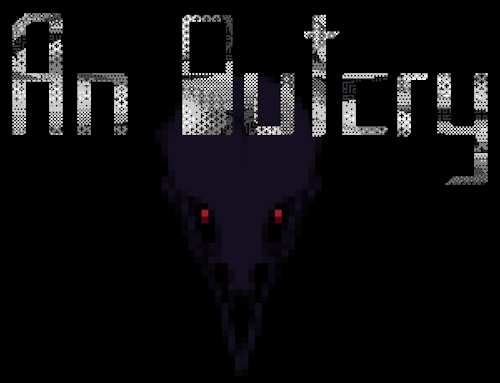
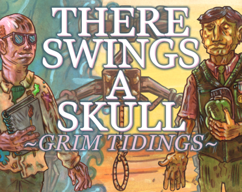

Pixel Art
GAMES
An Outcry

IGF Nuovo Award nominated, narrative-based RPG.
ROLES: Portraits, Environments, Battle Sprites
There Swings A Skull: Grim Tidings

A short narrative exploration game.
Created in Collaboration with Narrative Designer Conor Walsh from Obsidian Entertainment.
ROLES: Portraits, Environments, Overworld Sprites